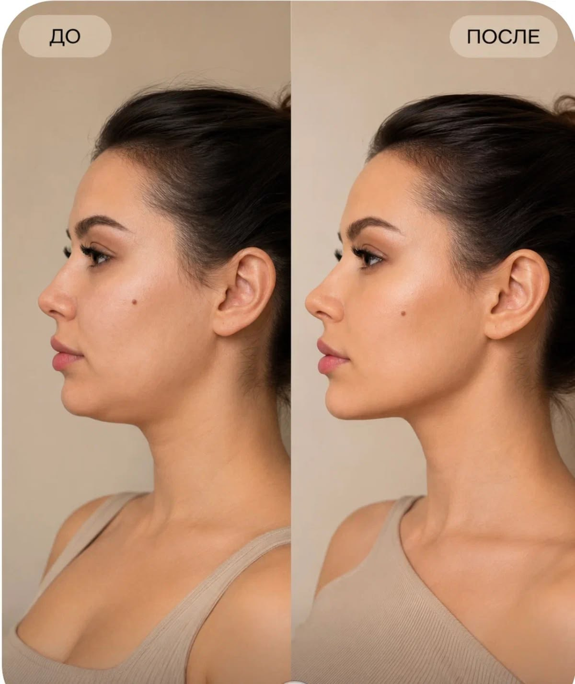
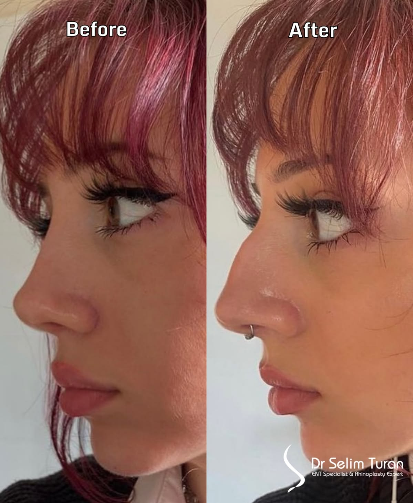
[FaceContouring+Nose+Anti-aging]FacialContouring+Rhinoplasty+Facelift
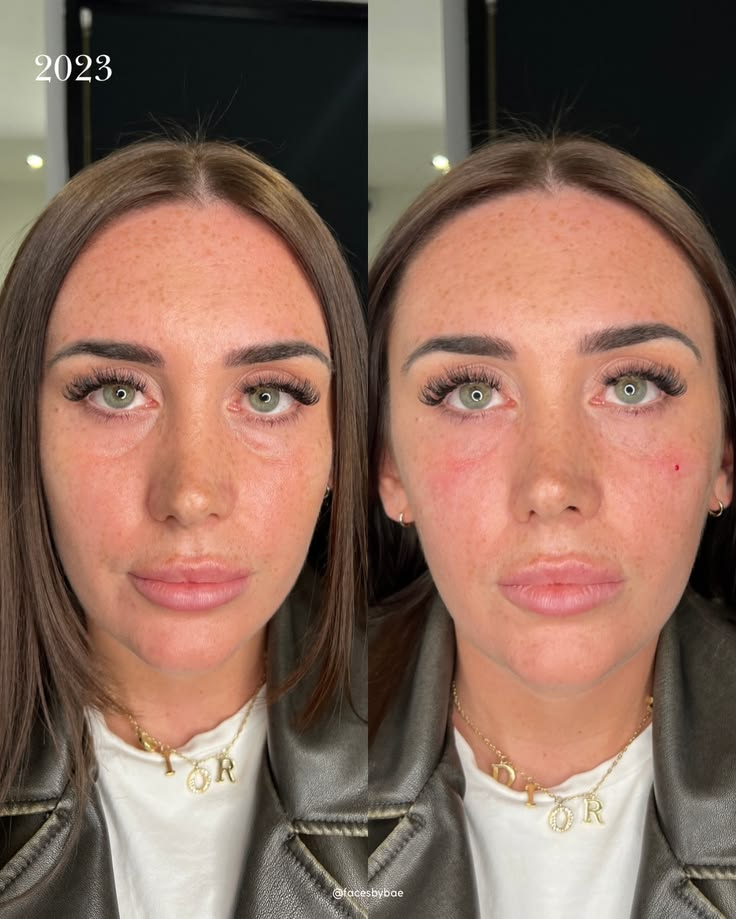
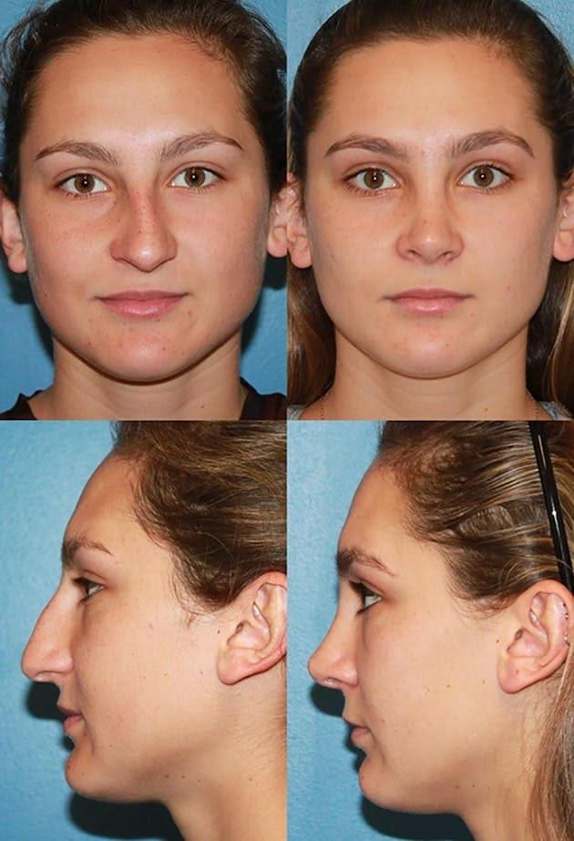
[OrthognathicSurgery]JawSurgery+OrthognathicSurgery
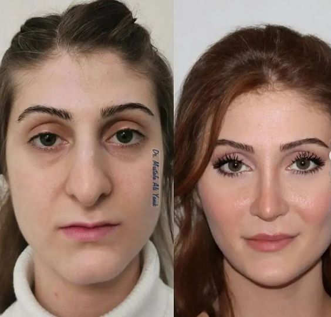
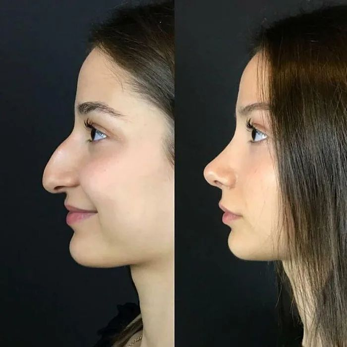
[Nose]PrimaryNoseSurgery+Rhinoplasty
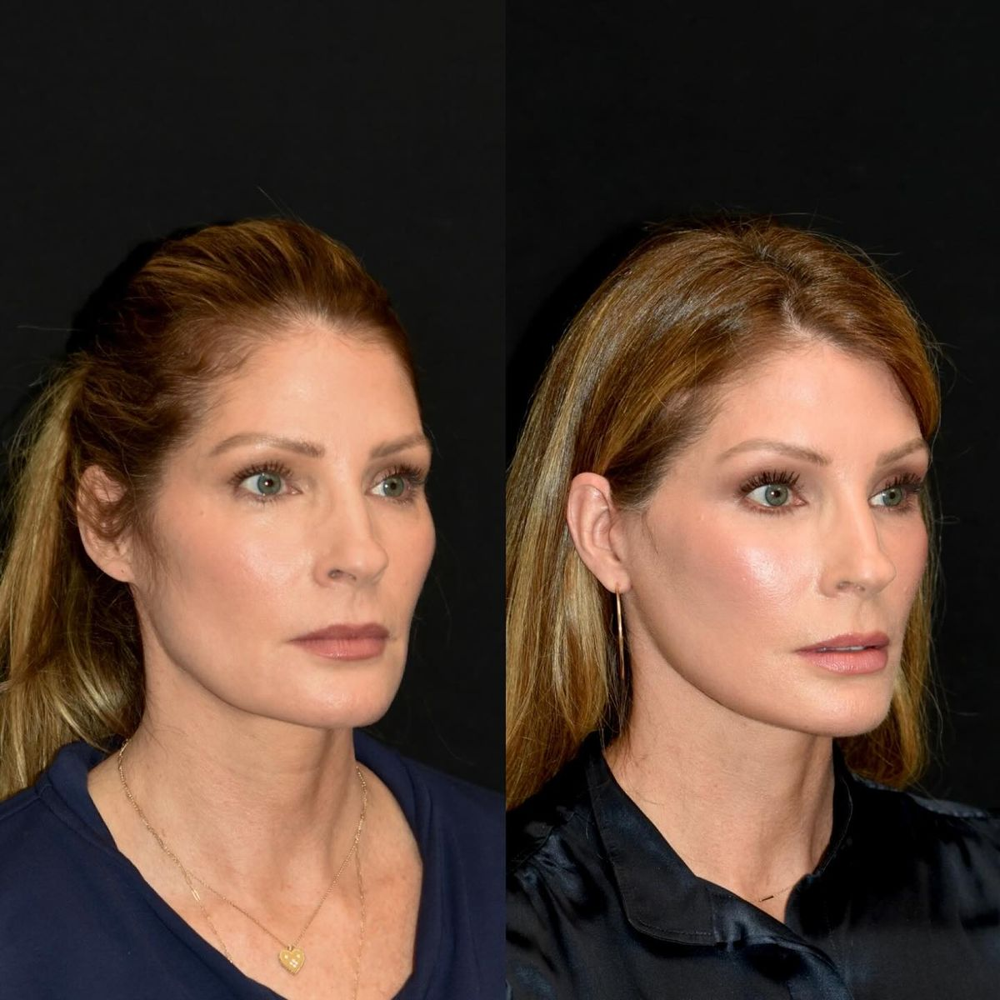
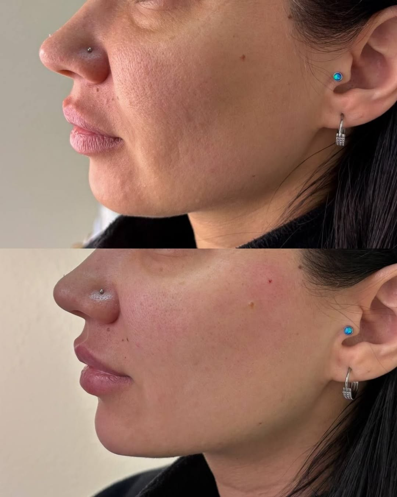
[FaceContouring+Eye+Anti-aging]FaceContouring+EyeSurgery+Facelift
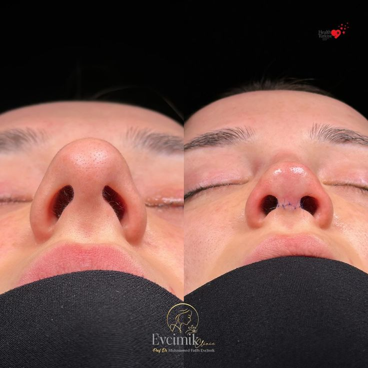
【鼻子】鼻部手术+鼻整形矫正
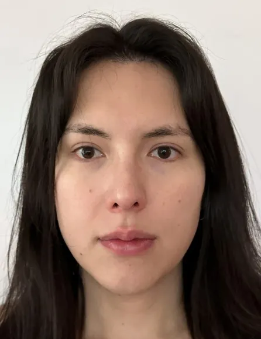
[Nose] Nose Surgery & Rhinoplasty
![FANSHI AESTHETICS - id B&A - [FaceContouring+Eye+Nose]FaceContouring+EyeSurgery+Rhinoplasty 前](../../../media/before-after/2026/07/24/f9edd0ad35554fe488ee2283fe867731.webp)
![FANSHI AESTHETICS - id B&A - [FaceContouring+Eye+Nose]FaceContouring+EyeSurgery+Rhinoplasty 后](../../../media/before-after/2026/07/24/6bee87d3d31c4715b17146342a4e63b5.webp)
[FaceContouring+Eye+Nose]FaceContouring+EyeSurgery+Rhinoplasty
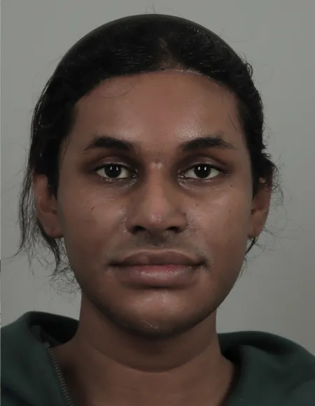
[FaceContouring+Anti-aging+Nose]FaceContouring+Facelift+Rhinoplasty
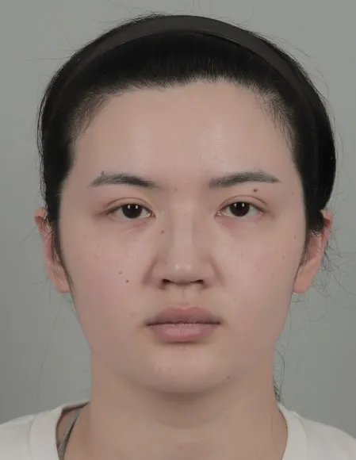
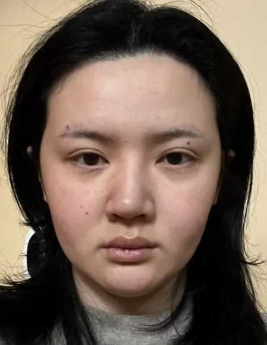
[Face Contouring+Nose] Jaw, Chin & Cheekbone Contouring & Rhinoplasty
![FANSHI AESTHETICS - id B&A - [Middle Age Eye+Anti-aging] Eyelid Rejuvenation & Facial Rejuvenation 前](../../../media/before-after/2026/07/22/b4ade882f1544f79804464c4b647ec9e.webp)
![FANSHI AESTHETICS - id B&A - [Middle Age Eye+Anti-aging] Eyelid Rejuvenation & Facial Rejuvenation 后](../../../media/before-after/2026/07/22/69045e3603934408a37a317a959ec5fc.webp)
[Middle Age Eye+Anti-aging] Eyelid Rejuvenation & Facial Rejuvenation
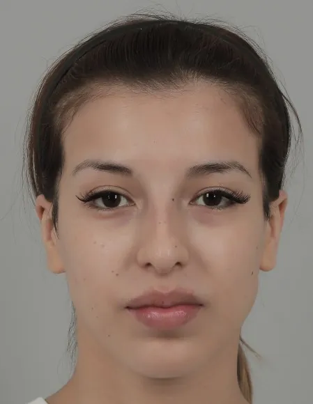
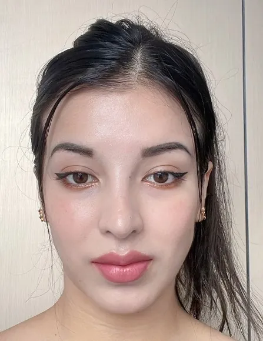
[Nose] Nose Surgery & Rhinoplasty
![FANSHI AESTHETICS - id B&A - [Face Contouring+Anti-aging+Eye] Facial Contouring, Eye Surgery & Facial Rejuvenation 前](../../../media/before-after/2026/07/22/46cd7e3dabb847ea9b093deb59784e98.webp)
![FANSHI AESTHETICS - id B&A - [Face Contouring+Anti-aging+Eye] Facial Contouring, Eye Surgery & Facial Rejuvenation 后](../../../media/before-after/2026/07/22/5f244b1a051e4228b825f69efdd52ba2.webp)
[Face Contouring+Anti-aging+Eye] Facial Contouring, Eye Surgery & Facial Rejuvenation
![FANSHI AESTHETICS - id B&A - [Face Contouring+Anti-aging+Nose] Facial Contouring, Rhinoplasty & Facial Rejuvenation 前](../../../media/before-after/2026/07/22/de5cd5220bb94d0a868bf3791f30f9f5.webp)
![FANSHI AESTHETICS - id B&A - [Face Contouring+Anti-aging+Nose] Facial Contouring, Rhinoplasty & Facial Rejuvenation 后](../../../media/before-after/2026/07/22/26292550fe724983b78c84ca8115af16.webp)
![FANSHI AESTHETICS - id B&A - [Eye+Anti-aging] Eyelid Surgery & Facial Rejuvenation 前](../../../media/before-after/2026/07/22/080db93eda4c45c583a082cdfe6fe913.webp)
![FANSHI AESTHETICS - id B&A - [Eye+Anti-aging] Eyelid Surgery & Facial Rejuvenation 后](../../../media/before-after/2026/07/22/32a16e09586742d4b5285e64866165f5.webp)
![FANSHI AESTHETICS - id B&A - [Orthognathic Surgery+Face Contouring+Nose] Orthognathic Surgery, Facial Contouring & Rhinoplasty 前](../../../media/before-after/2026/07/22/e04a741b39a748c2bd9f2f83fc618d49.webp)
![FANSHI AESTHETICS - id B&A - [Orthognathic Surgery+Face Contouring+Nose] Orthognathic Surgery, Facial Contouring & Rhinoplasty 后](../../../media/before-after/2026/07/22/2153440e75824a4ca226dc14afaa8737.webp)
![FANSHI AESTHETICS - id B&A - [Anti-aging] Facelift & Rejuvenation 前](../../../media/before-after/2026/07/22/60cc7f639a6a400a8a425396e1a2c010.webp)
![FANSHI AESTHETICS - id B&A - [Anti-aging] Facelift & Rejuvenation 后](../../../media/before-after/2026/07/22/c2bcc18ce482476fba4a7d4752c360e6.webp)
![FANSHI AESTHETICS - id B&A - [Face Contouring] Facial Bone Contouring 前](../../../media/before-after/2026/07/22/6629888506d94dbfb7733a4f93ff375a.webp)
![FANSHI AESTHETICS - id B&A - [Face Contouring+Eye+Nose+Anti-aging] Full Facial Makeover 前](../../../media/before-after/2026/07/22/bf125e0f03194c109b047c47575cba7a.webp)
![FANSHI AESTHETICS - id B&A - [Face Contouring+Eye+Nose+Anti-aging] Full Facial Makeover 后](../../../media/before-after/2026/07/22/258b10dcc94f4d07961a71b8e0559dd6.webp)